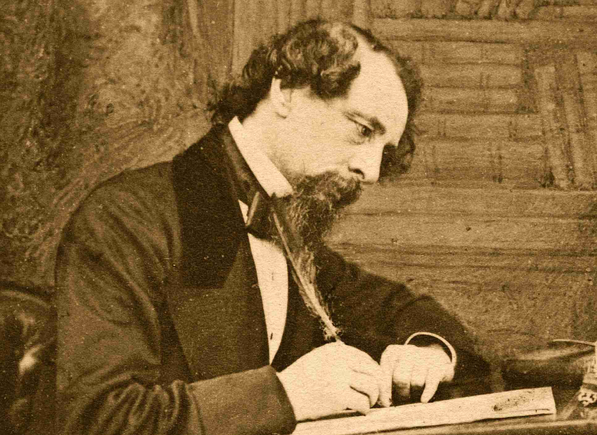
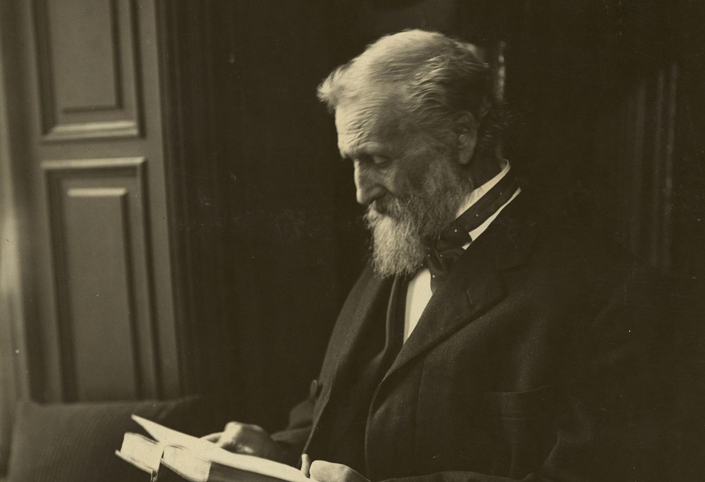

1.Charles Dickens

Charles Dickens (1812–1870) was the most popular Victorian novelist and is still considered a titan of literature.
He endured a notoriously difficult childhood yet developed work habits which allowed him to write lengthy yet brilliant novels.
There is a myth that his books are so long because he was paid by the word, but rather he was paid by installment and his novels appeared serially over weeks or months.
In classic books, including "Oliver Twist," "David Copperfield," "A Tale of Two Cities," and "Great Expectations," Dickens documented the social conditions of Victorian Britain.
He wrote during the Industrial Revolution in London and his books often concern the class divide, poverty, and ambition.
2.Jacob Riis

A Danish-American immigrant working as a journalist, Jacob Riis (1849–1914) felt great empathy for the poorest members of society.
His work as a newspaper reporter took him into immigrant neighborhoods, and he began to document conditions in both words and images, using the latest advances in flash photography.
His book "How the Other Half Lives" brought awareness of the squalid lives of the poor to the greater American society and into urban politics in the 1890s.
3.John Muir

John Muir (1838–1914) was a mechanical wizard who probably could have made a great living designing machinery for the growing factories of the 19th century, but he literally walked away from it to live, as he put it himself, "as a tramp."
Muir traveled to California and became associated with Yosemite Valley. His writings about the beauty of the Sierras inspired political leaders to set aside lands for preservation, and he has been called the "father of the National Parks."